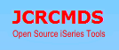

|  |
JCRCMDS Update Site RDi 8.0+Hi, this is the JCRCMDS plug-in update site for IBM Rational Developer for i. |
From the main menu, select "Help > Install New Software..." to enter the "Install" dialog.
Drag-and-drop the URL of the update site into the "Work with:" field:
Then select the options you want to install, press the [Next] button and follow the instructions given on the following pages.
Go to the JCRCMDS download page at SourceForge and download the zip file for your environment.
The follow these steps to create your local update site:
Go to the JCRCMDS download page at SourceForge and download the zip file for your environment.
The follow these steps to create your local update site:
The following terms are trademarks of the IBM Corporation in the United States or other countries or both:
| Version: 1.0.3.b001 - Copyright: 2024, JCRCMDS project owners | Updated: 03.11.2024 - 14:20:59 |